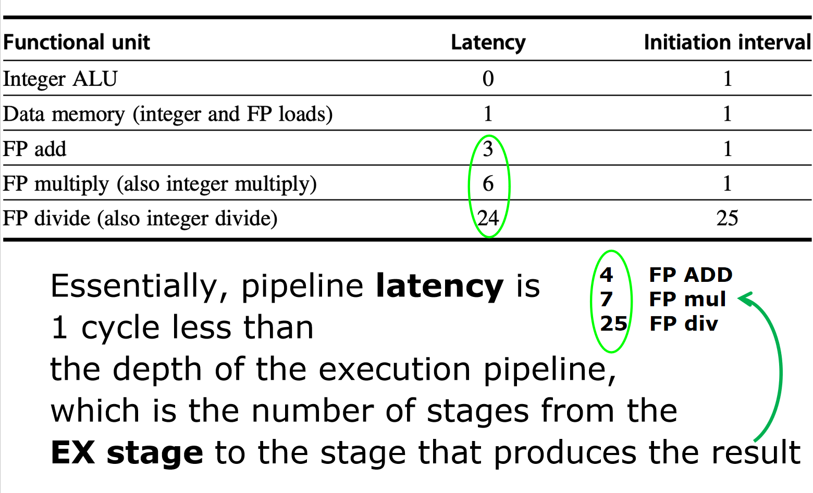

计算机体系结构3-2-1:静态并行
1.1 设计哲学的转变”
如果说动态调度的信条是“延迟决策，实时最优”，那么静态调度的核心理念就是“未雨绸缪，编译时即优化”。
- 动态调度：将指令调度的复杂性交给硬件。处理器像一个经验丰富的现场指挥官，根据瞬息万变的“战况”（数据是否就绪、资源是否空闲）来动态调整指令的执行顺序。
- 静态调度：将指令调度的重任交给编译器。编译器则像一个运筹帷幄的战略家，在战争开始前（程序编译时），就通过对整个“战场”（代码）的全局分析，精心编排好指令的“作战序列”，从而在硬件层面简化相关的处理逻辑。
这两种哲学并非完全对立，现代处理器常常是二者结合的产物。但理解纯粹的静态并行思想，对于我们认识整个计算机体系结构的设计空间至关重要。静态并行的成败，几乎完全取决于编译器对程序“本质”的理解深度。这个“本质”，就是指令之间的依赖关系（Dependencies）。
1.2 指令间依赖
对于编译器而言，一段程序不再是简单的指令序列，而是一张复杂的数据流图（Data-Flow Graph）。为了进行有效的调度，编译器必须精确地识别三类依赖关系，它们是指令重排的“法律与镣铐”。
1. 数据依赖 (Data Dependence) - RAW
- 定义：后一条指令
j需要使用前一条指令i的计算结果。这构成了**写后读（Read After Write, RAW）**的数据流。 - 本质：这是程序逻辑的根本体现，是“算法”本身。例如
a = b + c; d = a * 2;，a的值必须从第一条指令流向第二条。 - 设计原则：数据依赖是神圣不可侵犯的。任何调度都必须维持这个先后顺序，否则程序结果就会出错。这是编译器调度的硬性约束。
让我们看一个经典的循环例子：
Loop:
fld f0, 0(x1) ; 指令 I1: 从内存加载值到 f0
fadd.d f4, f0, f2 ; 指令 I2: 使用 f0
fsd f4, 0(x1) ; 指令 I3: 存储 f4 的结果
addi x1, x1, -8 ; 指令 I4: 更新地址指针
bne x1, x2, Loop ; 指令 I5: 循环分支
在这里，fadd.d 依赖于 fld 的结果 f0，fsd 依赖于 fadd.d 的结果 f4。这两对 RAW 依赖关系构成了循环体的核心计算链，编译器在重排时必须予以保证。
2. 名依赖 (Name Dependence) - WAW & WAR
- 定义：两条指令使用了相同的寄存器或内存地址的“名字”，但它们之间并没有直接的数据流动。
- 本质：这是资源的偶然冲突，而非逻辑上的必然。它源于程序中有限的寄存器数量。
- 设计原则：名依赖是可以通过“改名”来消除的镣铐。这是编译器大展身手的核心领域。
- 反依赖 (Antidependence) - WAR：前一条指令
i要读取一个寄存器，而后一条指令j要写入同一个寄存器。即读后写（Write After Read）。如果j被错误地调度到i之前，i就会读到错误的新值。 - 输出依赖 (Output Dependence) - WAW：两条指令
i和j要写入同一个目标寄存器。即写后写（Write After Write）。如果它们的执行顺序被颠倒，最终留在寄存器里的将是错误的值。
- 反依赖 (Antidependence) - WAR：前一条指令
硬件通过寄存器重命名来动态解决这个问题，而编译器则通过静态寄存器分配和指令调度来规避它。例如，如果编译器发现一个 WAW 依赖，它可能会尝试为其中一条指令分配一个不同的临时寄存器，从而打破这种伪相关。
3. 控制依赖 (Control Dependence)
- 定义：一条指令
i的执行与否，取决于前面某个分支指令j的结果。 - 本质：定义了程序的执行路径。
- 设计原则：控制依赖是调度的“围墙”。通常，编译器不能随意地将一条指令跨越它所依赖的分支进行移动。例如，不能将只在
if块中执行的指令，移动到if语句之前。这样做可能会引发不必要的计算，甚至导致本不该发生的异常（例如，对一个空指针的解引用）。
1.3 多周期流水线
在简单的五级流水线中，所有指令的执行时间相同，停顿相对简单可控，静态调度的空间有限。然而，现实世界中的处理器，特别是带有强大浮点单元（FPU）的处理器，其流水线要复杂得多。这恰恰为静态调度提供了广阔的用武之地。
1.3.1 为何需要复杂的浮点流水线？
浮点运算（加、乘、除）的复杂度远高于整数运算。如果我们坚持所有指令的 EX 阶段都只占用一个时钟周期，会面临两个无法接受的选择：
- 极度拉长时钟周期：为了容纳最慢的浮点除法，时钟周期会变得非常长，导致那些简单的整数运算性能急剧下降。这违背了“优化大概率事件”的设计原则。
- 堆砌海量硬件：在一个周期内完成复杂运算需要巨大的、不切实际的组合逻辑电路，成本和功耗都会失控。
因此，唯一可行的设计是允许多周期操作，并为不同类型的运算提供专门的、流水化的功能单元。

这张图展示了一个典型的、支持静态调度的高性能流水线结构。我们必须深刻理解它的设计哲学：
- 并行与专业化：处理器不再是一条单行道，而是拥有了多条并行的“专业车道”：一个整数单元、一个流水化的 FP 加法器、一个更深流水线的 FP 乘法器，以及一个未完全流水化的 FP 除法器。
- 可变延迟：不同“车道”的长度（流水线深度）不同。
fadd.d可能需要 4 个周期完成执行，而fmul.d需要 7 个周期，fdiv.d则可能需要 24 个周期。 - 乱序完成 (Out-of-Order Completion)：由于延迟不同，指令的完成顺序很可能与它们的发射顺序不同。一条后发射的
fadd.d很有可能会比先发射的fmul.d更早完成。
这个结构为提升 ILP 提供了硬件基础，但同时也给编译器带来了前所未有的挑战和机遇。为了精确地进行调度，编译器必须掌握两个核心的性能指标。
1.3.2 调度的度量衡：延迟(Latency)与发射间隔(Initiation Interval)
-
延迟 (Latency)
- 定义：从一条指令产生结果，到另一条依赖于该结果的指令可以开始使用该结果，所必须间隔的时钟周期数。
- 设计解读：延迟反映了**真数据依赖（RAW）**导致的最小停顿时间。如果
fmul.d的延迟是 6，意味着fmul.d指令进入 EX 阶段后的第 7 个周期，其结果才能被下一条指令使用。编译器需要在这 6 个周期的“空档”中，插入其他不相关的指令。 - 计算：对于一个深度为 $N$ 的执行流水段（如乘法器的 M1-M7），结果在第 $N$ 阶段的末尾产生，可以通过前向通路在第 $N+1$ 个周期的开始被后续指令使用。因此，需要等待的周期数是 $(N+1) - 1 = N$ 个周期吗？不完全是。通常，我们将延迟定义为需要插入的
nop指令数量。如果结果在第 $k$ 周期可用，而依赖指令在第 $k+1$ 周期就需要它，那么延迟为0。如果依赖指令需要停顿1个周期，延迟就是1。因此，延迟 = 产生结果的阶段 - 消耗结果的阶段。对于一个深度为 $N$ 的执行流水段，结果在EX_N阶段产生，而后续指令在EX阶段就需要，所以延迟为 $N-1$。 - 请看参考如下 表格，FP Add 的执行阶段有4级（A1-A4），其延迟为 $4-1=3$。FP Multiply 有7级（M1-M7），延迟为 $7-1=6$。 
-
发射间隔 (Initiation/Repeat Interval)
- 定义：在同一个功能单元上，连续发射两条同类型指令之间所需的最小时钟周期数。
- 设计解读：发射间隔反映了功能单元的吞吐能力。
- 如果功能单元是完全流水化的（Fully Pipelined），比如 FP 加法器和乘法器，那么它在每个时钟周期都可以接收一条新的指令。此时，发射间隔为 1。
- 如果功能单元不是流水化的，比如这里的 FP 除法器，它在完成当前操作之前，不能接收新的操作。此时，发射间隔就等于它的总执行时间（例如 24 个周期）。这意味着在一条
fdiv.d指令发射后，下一条fdiv.d必须等待 24 个周期才能发射，这会造成严重的结构相关。
1.3.3 新流水线下的“升级版”相关
有了多周期、多功能单元的流水线，我们之前讨论的相关问题也变得更加复杂和频繁。
-
结构相关 (Structural Hazards)
- 功能单元冲突：如上所述，对非流水化的除法器连续请求，会导致结构相关。
- 写回端口冲突：这是更普遍的问题。想象一下，一条
fmul.d（延迟6）和一条 7 个周期前发射的integer op（延迟0）可能会在同一个时钟周期完成执行，并都想进入 WB 阶段写回寄存器。如果寄存器堆只有一个写端口，就会发生冲突。 这张图清晰地展示了
这张图清晰地展示了 fmul.d和fadd.d同时在第 10 周期到达 MEM/WB 阶段，fld和另一条指令在第 11 周期也同时到达 WB 阶段，造成了资源冲突。编译器在调度时，必须像“排课表”一样，确保不会有两节“课”（指令写回）被安排在同一个“教室”（写回端口）和“时间”（时钟周期）。
-
数据相关 (Data Hazards)
- RAW: 由于浮点操作的高延迟，RAW 导致的潜在停顿周期数大大增加。
fmul.d -> fadd.d的依赖链意味着至少 6 个周期的停顿。这为编译器提供了巨大的优化空间去“填空”。 这个例子展示了
这个例子展示了 fadd.d因为依赖fmul.d的结果f0，被迫在 ID 阶段停顿了整整 6 个周期的停顿，直到fmul.d的结果通过前向通路传递过来。 - WAW: 在乱序完成的流水线中，WAW 相关变得非常真实。
DIV.D F0, F2, F4 ; 慢指令 ... ADD.D F0, F8, F10 ; 快指令ADD.D会比DIV.D早得多完成计算。如果没有合适的机制，ADD.D会先写回 F0，然后这个正确的结果会被后完成的DIV.D错误地覆盖掉。编译器必须检测这种 WAW 相关，并通过停顿后发射的ADD.D指令来保证正确的写入顺序。 - RAW: 由于浮点操作的高延迟，RAW 导致的潜在停顿周期数大大增加。